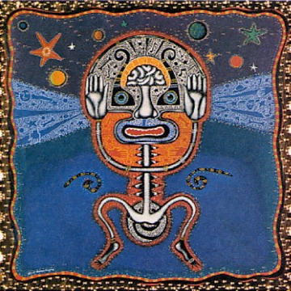
N01 · Unresolved original
Brain and skeleton
Context. No original commission or publication identified. The title here is a descriptive label.
Visible forms. Brain and skeletal forms occupy a frontal figure; hands sit beside its head; stars and planets surround it.
Possible reading. The image combines a person’s internal anatomy with a cosmic setting. Without its original context, an intended claim about consciousness, medicine, or spirituality cannot be assigned.
Supplied by Robin; public match unresolved. · Original file
descriptive label, not verified title. 360 × 360 pixels.
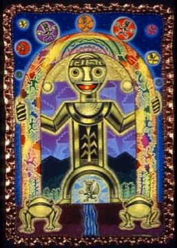
N02 · Unresolved original
Figure under rainbow
Context. No original commission or publication identified. The title here is a descriptive label.
Visible forms. A figure holds two sides of a rainbow-like arch; small circular emblems sit above; vessels and a flowing line sit below.
Possible reading. The arch and lower vessels suggest a connection between levels or domains. The exact story, cultural reference, and direction of flow remain unknown.
Supplied by Robin; public match unresolved. · Original file
descriptive label, not verified title. 257 × 360 pixels.
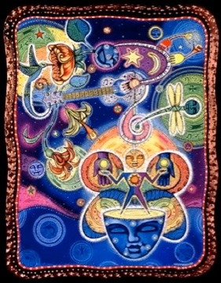
N03 · Unresolved original
Blue vessel and connections
Context. No original commission or publication identified. The title here is a descriptive label.
Visible forms. A blue face-like bowl supports a small figure; curling paths connect body parts, tools, stars, and floating forms.
Possible reading. The vessel and linked objects invite a reading of thought as a place where different inputs meet. This is a formal reading, not a verified commission subject.
Supplied by Robin; public match unresolved. · Original file
descriptive label, not verified title. 281 × 360 pixels.
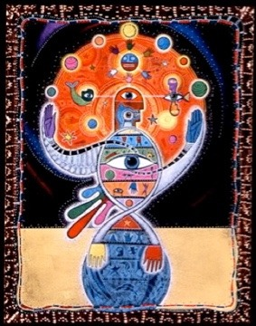
N04 · Unresolved original
Helix body and orbits
Context. No original commission or publication identified. The title here is a descriptive label.
Visible forms. A figure has a double-helix-like torso, eyes at several scales, raised hands, and an orange field of orbiting shapes.
Possible reading. The repeated eyes and helix-like body connect scales within one figure. A precise scientific or spiritual interpretation requires the missing context.
Supplied by Robin; public match unresolved. · Original file
descriptive label, not verified title. 283 × 360 pixels.
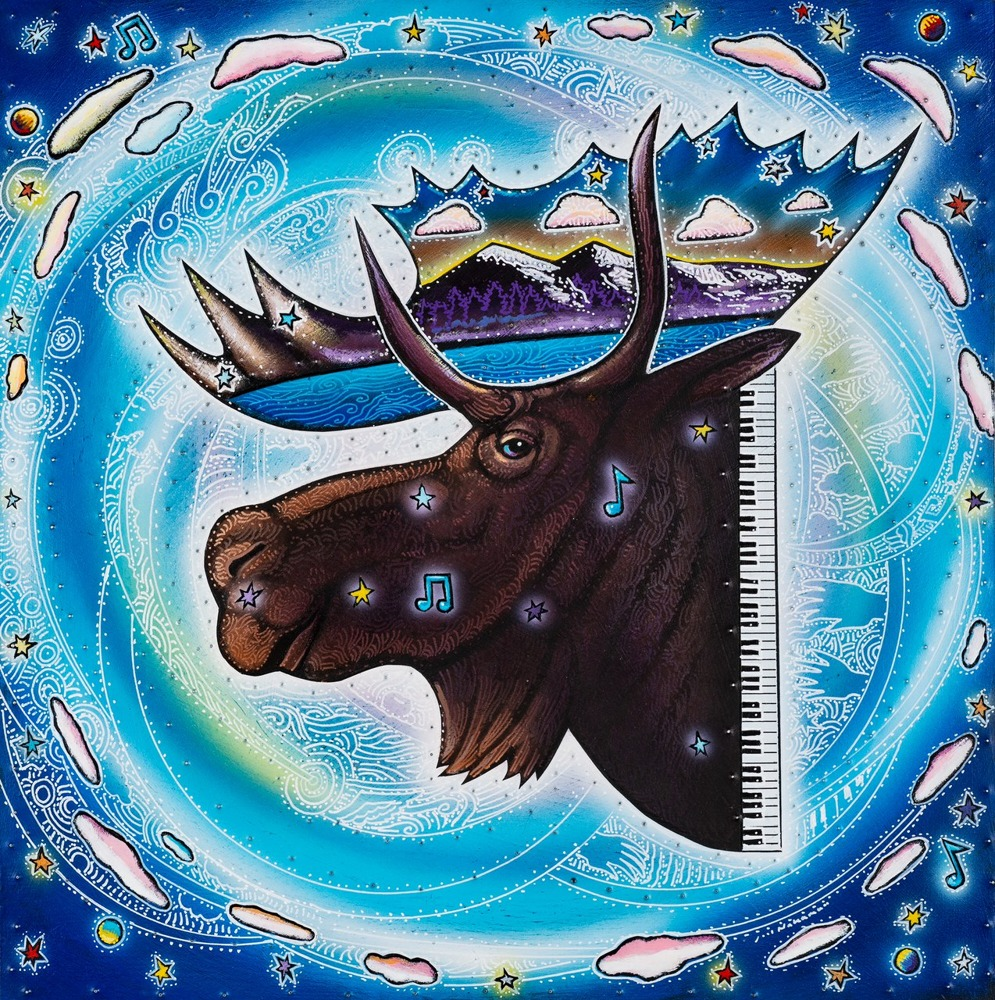
N05 · Artist portfolio context
Out of Thin Air/ Moose Music
Context. Record cover art for Don Grusin
Visible forms. A moose head stands within a circular field containing landscape and small repeated shapes.
Artist’s source gallery · Original file
artist portfolio title. 1274 × 1280 pixels.
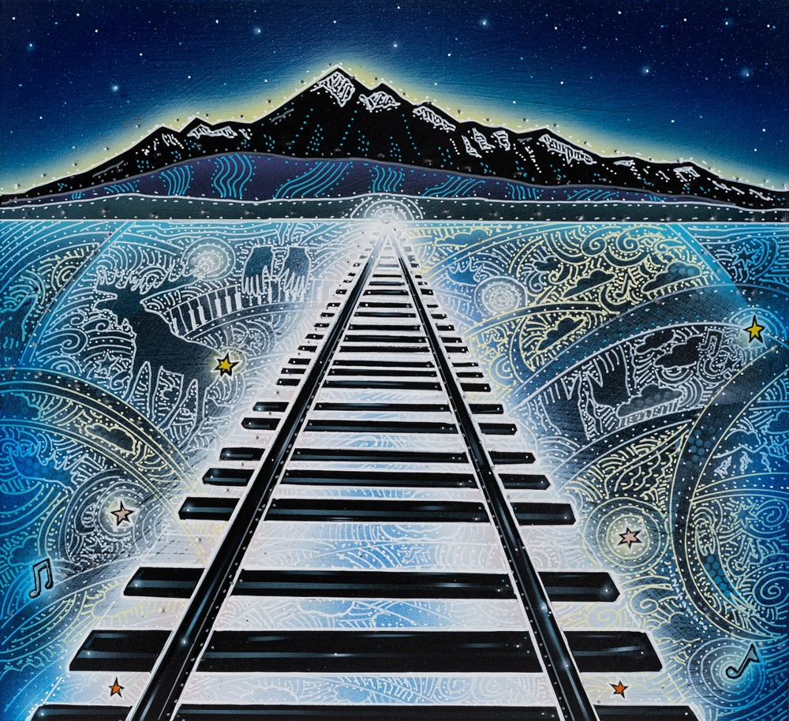
N06 · Artist portfolio context
The Last Train
Context. Single cover image for Don Grusin
Visible forms. Railway tracks converge toward mountains and a luminous horizon, with creatures and marks beside them.
Artist’s source gallery · Original file
artist portfolio title. 1280 × 1170 pixels.
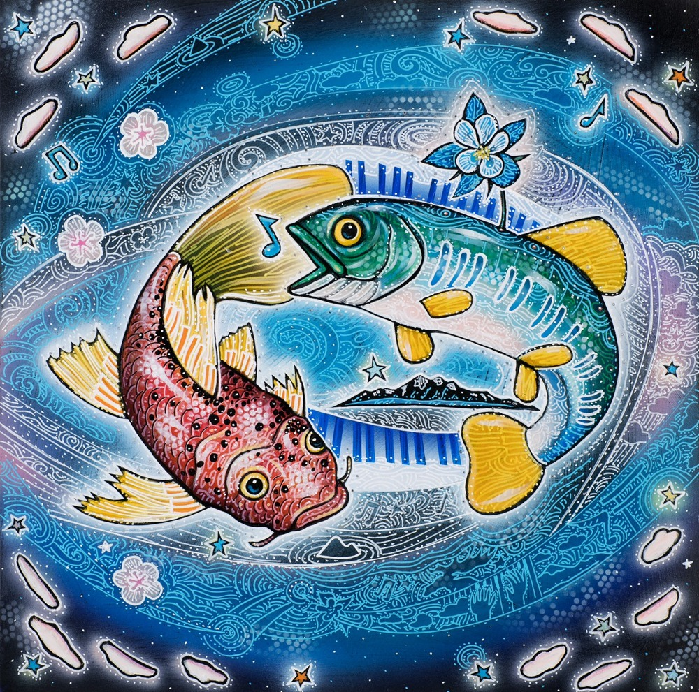
N07 · Artist portfolio context
So Nan Desu
Context. Image created for single for Don Grusin
Visible forms. Two fish curve around a musical note, surrounded by small floating marks.
Artist’s source gallery · Original file
artist portfolio title. 1280 × 1268 pixels.
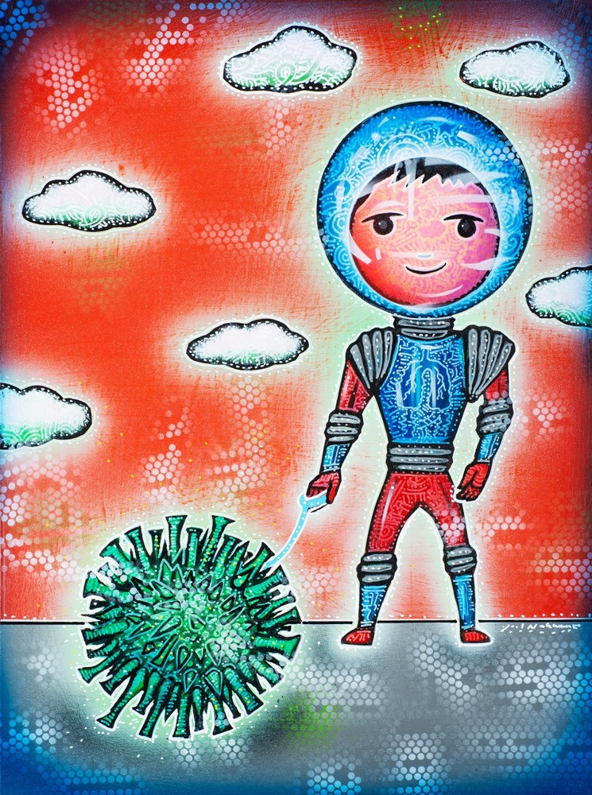
N08 · Artist portfolio context
Covid-19
Context. Is this our future?
Visible forms. A figure in a helmet faces a large spiked sphere among clouds and patterned color fields.
Artist’s source gallery · Original file
artist portfolio title. 954 × 1280 pixels.

N09 · Artist portfolio context
Medtronic Poster art
Context. Image for Medtronic Conference cardiology collection of Medtronic
Visible forms. An anatomical heart and device-like forms occupy a warm red panel enclosed by an ornamented frame.
Possible reading. A technical subject retains its recognizable anatomy while becoming a richly framed central presence. This can guide technical illustration without claiming that ornament explains a medical mechanism.
Artist’s source gallery · Original file
artist portfolio title. 775 × 1020 pixels.
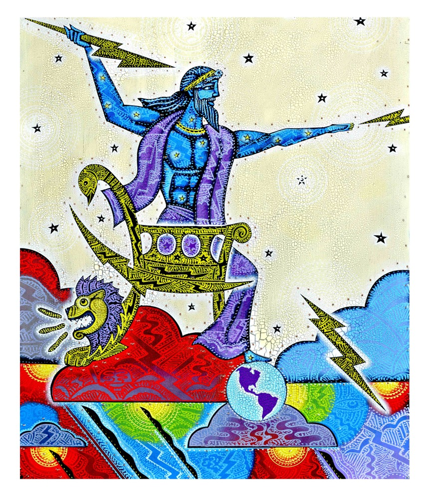
N10 · Artist portfolio context
Zeus
Context. Mythology series for Imperial Printing
Visible forms. A blue figure points outward while perched above stacked animals and a globe-like form.
Artist’s source gallery · Original file
artist portfolio title. 3852 × 4487 pixels.
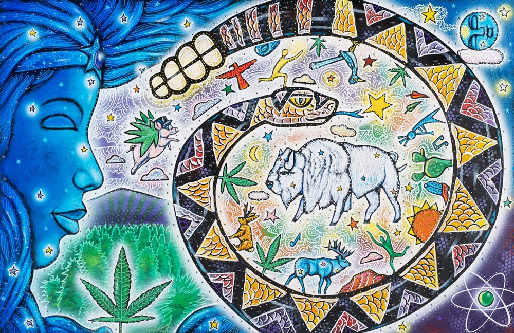
N11 · Artist portfolio context
Hempire
Context. Image Brand art for Santa Fe Farms/Brands
Visible forms. A spiral field encloses animals and plant-like forms beneath prominent lettering.
Artist’s source gallery · Original file
artist portfolio title. 1280 × 830 pixels.
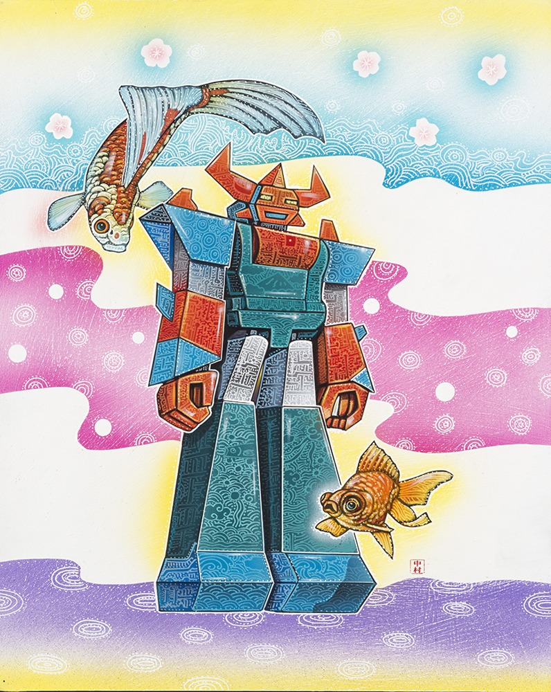
N12 · Artist portfolio context
Koi and Robot
Context. Poster image for Santa Fe Japan festival
Visible forms. A geometric robot stands among floating koi and small clouds.
Possible reading. The combination gives familiar fish and a machine-character a shared setting. The artist identifies a Japanese festival commission; the exact symbolic role of each fish is not specified.
Artist’s source gallery · Original file
artist portfolio title. 864 × 1086 pixels.
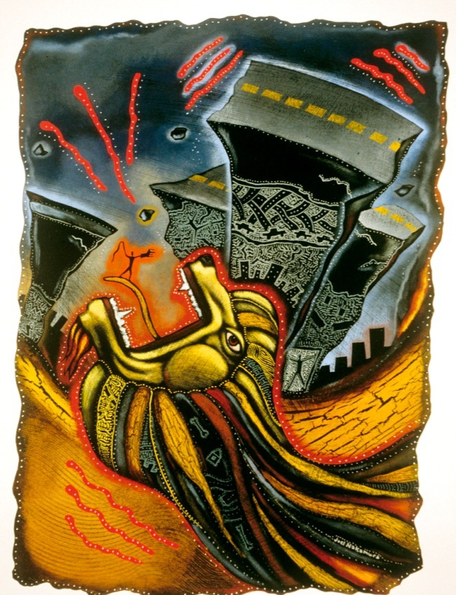
N13 · Artist portfolio context
Earthquake
Context. Los Angeles Times, article about how we can not tame the power of nature
Visible forms. An enormous open mouth and sharp shapes surround small urban or structural forms.
Possible reading. The artist’s description concerns nature’s untamable power. Disproportion between the giant mouth and smaller structures offers a possible visual expression of that power.
Artist’s source gallery · Original file
artist portfolio title. 660 × 860 pixels.
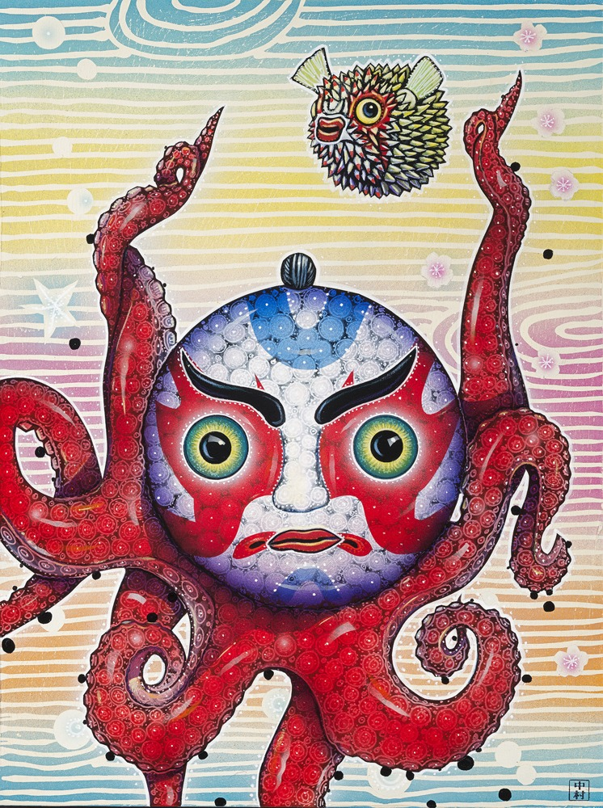
N14 · Artist portfolio context
Kabuki Octopus
Context. Poster Image for Santa Fe Japan Festival
Visible forms. An octopus body carries a painted theatrical face, a headdress, and curling arms.
Artist’s source gallery · Original file
artist portfolio title. 1348 × 1806 pixels.
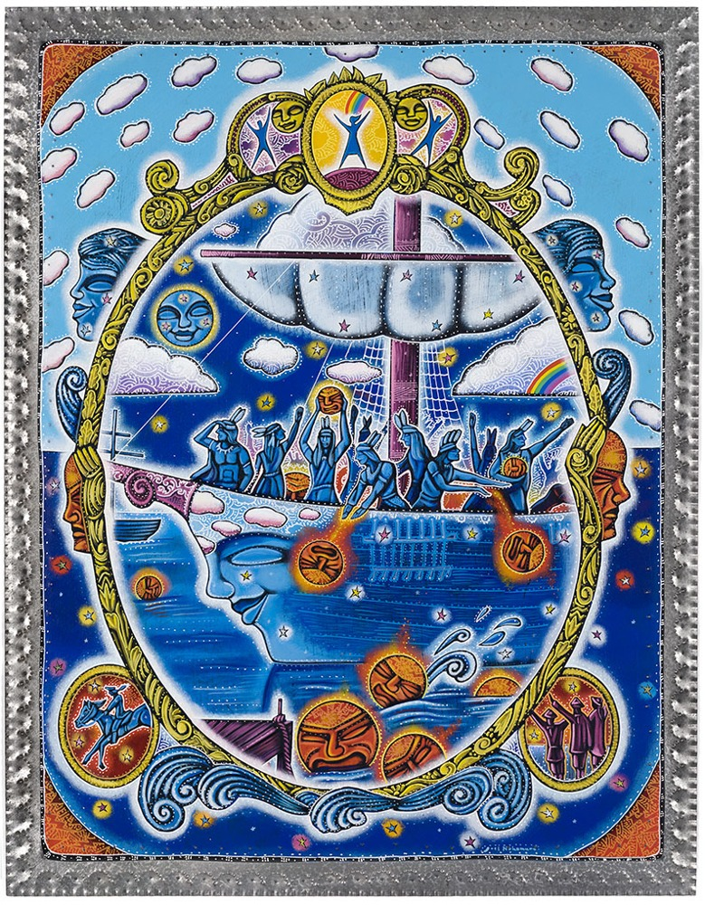
N15 · Artist portfolio context
Merck/ Maxalt Boston Tea Party
Context. Poster for conference in Boston Maxalt is a migrane headache medicine.
Visible forms. A sailing ship and historical figure fit inside a blue face-like vessel, enclosed by an oval frame.
Possible reading. A container becomes a stage for a historical scene. Boston is documented in the commission note; meanings for the enclosing face and smaller objects are inferred.
Artist’s source gallery · Original file
artist portfolio title. 795 × 1020 pixels.
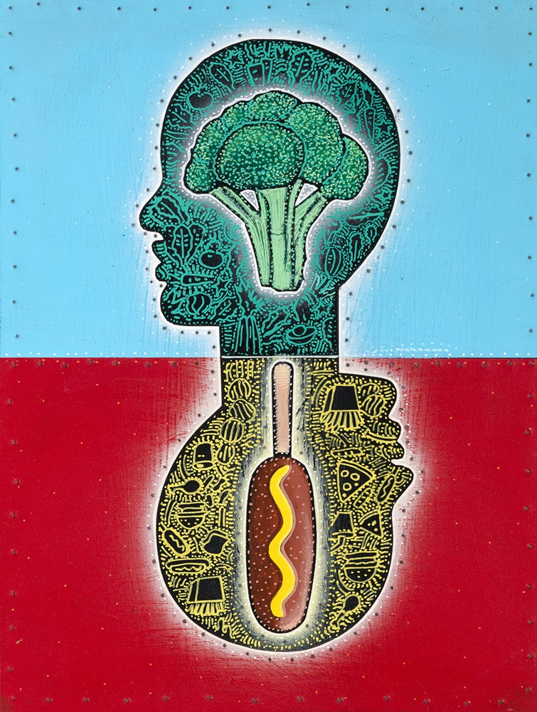
N16 · Artist portfolio context
Choices
Context. John Hopkins School of Health
Visible forms. A head profile containing broccoli sits above an inverted profile containing a hot dog.
Possible reading. The repeated profile joins food with the head and body, making competing choices visually comparable. The image alone does not establish a nutritional claim.
Artist’s source gallery · Original file
artist portfolio title. 998 × 1321 pixels.
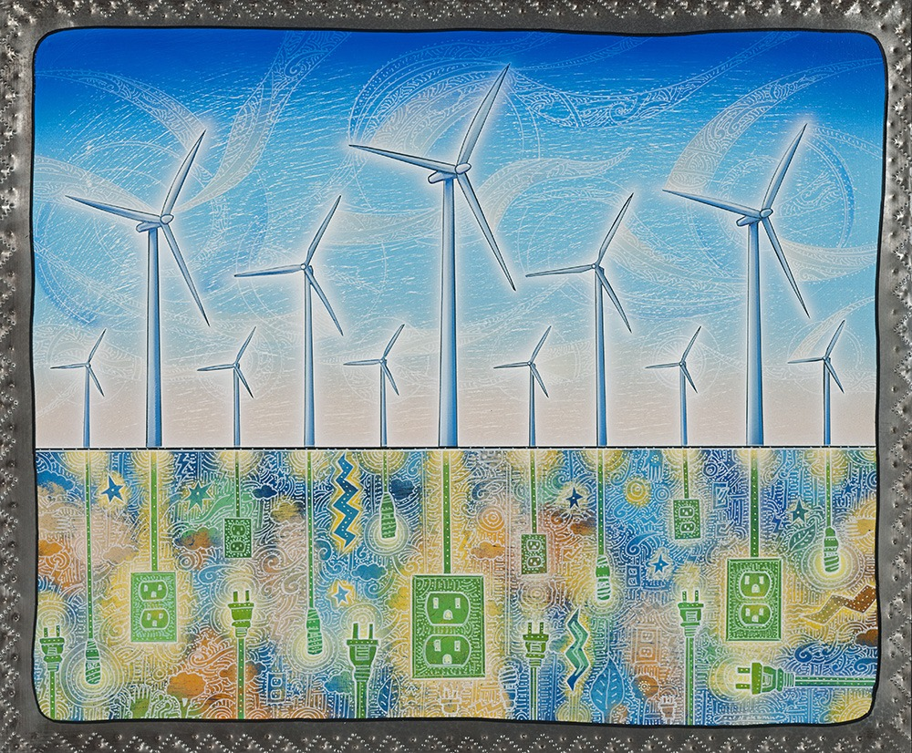
N17 · Artist portfolio context
Wind Power
Context. Illustration for Santa Fe Natural Tobacco
Visible forms. Wind turbines rise over layers of green plants and patterned ground.
Artist’s source gallery · Original file
artist portfolio title. 1000 × 826 pixels.
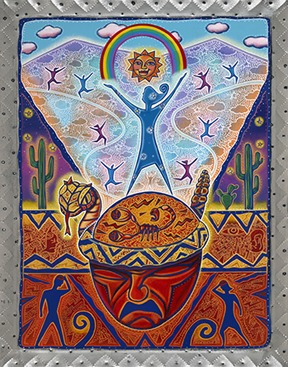
N18 · Artist portfolio context
Merck / Maxalt Poster art
Context. Poster art for Scottsdale AZ Conference
Visible forms. A figure with raised arms supports a rainbow; landscape and smaller figures surround a central patterned head.
Artist’s source gallery · Original file
artist portfolio title. 288 × 367 pixels.
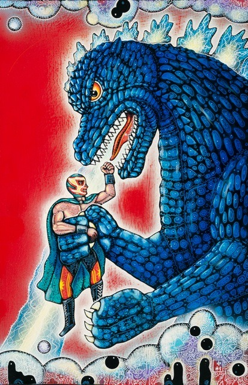
N19 · Artist portfolio context
Wrestler and Godzilla
Context. Image created for fusion cuisine Chino- Latino
Visible forms. A small masked wrestler confronts a much larger blue reptilian creature.
Artist’s source gallery · Original file
artist portfolio title. 413 × 640 pixels.

N20 · Artist portfolio context
Network Dream
Context. Image created for Georgia Pacific Paper. HOW design confenece
Visible forms. A spiral contains small people, arrows, and emblems; a blue face-like vessel sits alongside the lower turns.
Possible reading. The spiral offers a route through many small actors and signs. Given the design-conference commission, connected activity is a plausible reading; individual emblems remain undecoded.
Artist’s source gallery · Original file
artist portfolio title. 1528 × 1949 pixels.
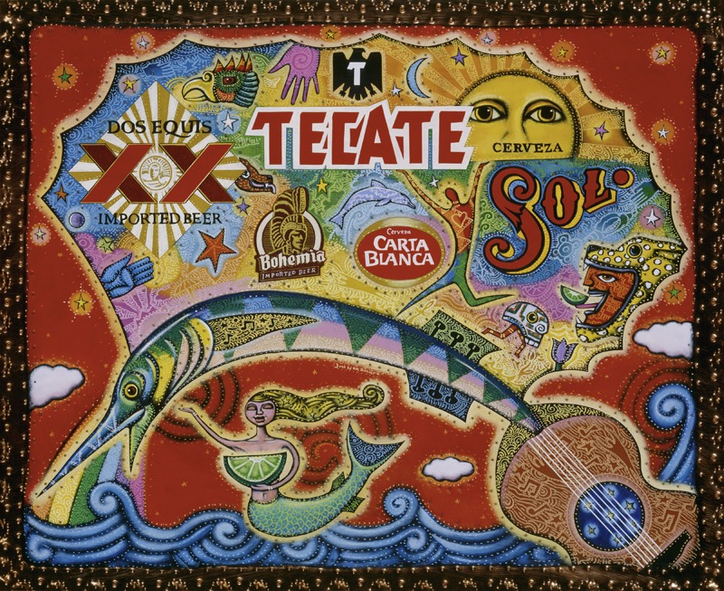
N21 · Artist portfolio context
Beer Distribution poster
Context. Image created for a Beer distribution company
Visible forms. Beer names, bottles, and emblems are gathered inside a multicolored ornamental panel.
Artist’s source gallery · Original file
artist portfolio title. 800 × 653 pixels.
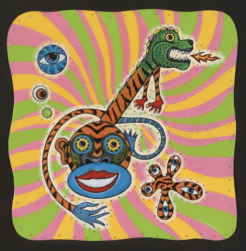
N22 · Artist portfolio context
LSD
Context. Image created for Playboy Magazine, article about LSD
Visible forms. A vessel-like face carries a snake-necked creature, floating eyes, and organic forms against radiating bands.
Possible reading. The artist explicitly associates this commission with an article about LSD. That context applies to this image and should not be transferred to every unusual figure in the collection.
Artist’s source gallery · Original file
artist portfolio title. 500 × 510 pixels.
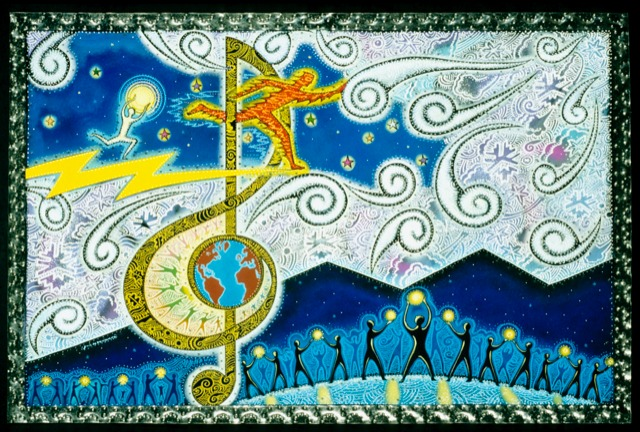
N23 · Artist portfolio context
2002 Winter Olympic program
Context. image for 2002 Olympic program
Visible forms. A running figure and circular body marks connect mountains, lightning, and a procession of small figures.
Artist’s source gallery · Original file
artist portfolio title. 640 × 432 pixels.
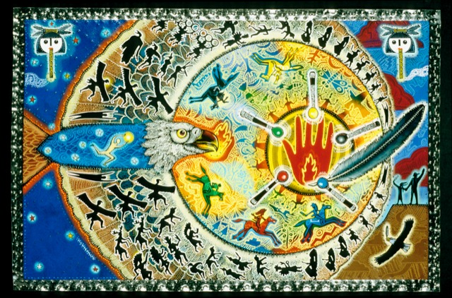
N24 · Artist portfolio context
2002 Winter Olympics
Context. Image created for the 2002 Olympic Games opening cerimonies program collection of Olympic Museum
Visible forms. Birds, figures, plants, and other small forms inhabit a broad circular field.
Artist’s source gallery · Original file
artist portfolio title. 640 × 422 pixels.
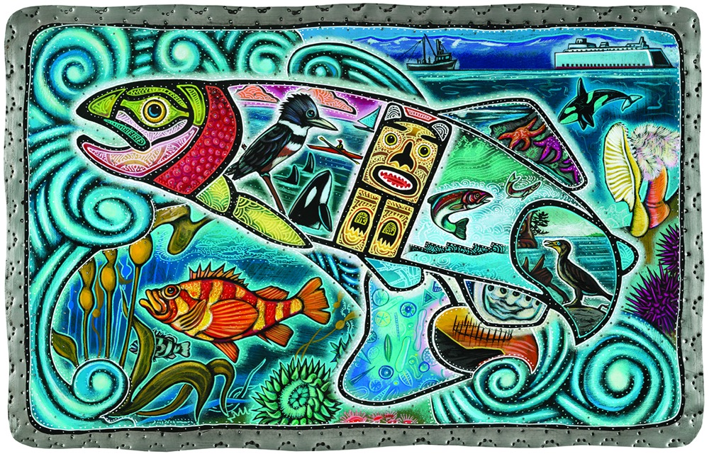
N25 · Artist portfolio context
Poster Sea Grant
Context. University of Washington Sea Grant
Visible forms. Fish and other marine forms overlap with small scenes inside a patterned aquatic composition.
Possible reading. Small creatures and scenes make the larger marine composition feel inhabited. The documented Sea Grant commission supplies an environmental context.
Artist’s source gallery · Original file
artist portfolio title. 1248 × 800 pixels.
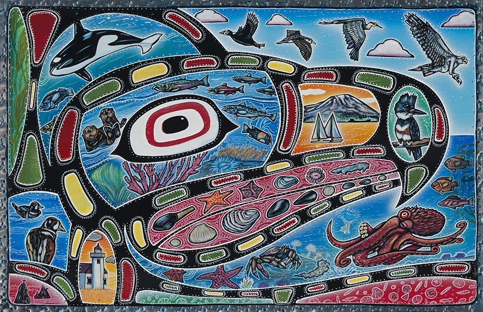
N26 · Artist portfolio context
Washington Sea Grant 2011
Context. Poster image for the Universtity of Washington Sea Grant program
Visible forms. Marine creatures and small pictorial elements occupy interlocking curved compartments.
Artist’s source gallery · Original file
artist portfolio title. 954 × 616 pixels.

N27 · Artist portfolio context
JVC Jazz Festival poster
Context. Image created for JVC Jazz poster
Visible forms. A large saxophone-shaped silhouette contains a person and smaller forms, with another figure extending alongside it.
Possible reading. The instrument doubles as a setting for performers and smaller forms. The object can be read both at the scale of a musical tool and at the scale of a world.
Artist’s source gallery · Original file
artist portfolio title. 600 × 765 pixels.
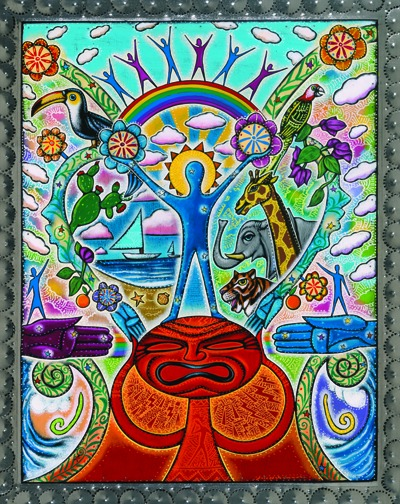
N28 · Artist portfolio context
Merck/ Maxalt Poster
Context. San Diego poster for Neurology conference
Visible forms. A central figure and rainbow rise above a red head-like form, surrounded by coastal imagery and plants.
Artist’s source gallery · Original file
artist portfolio title. 400 × 504 pixels.
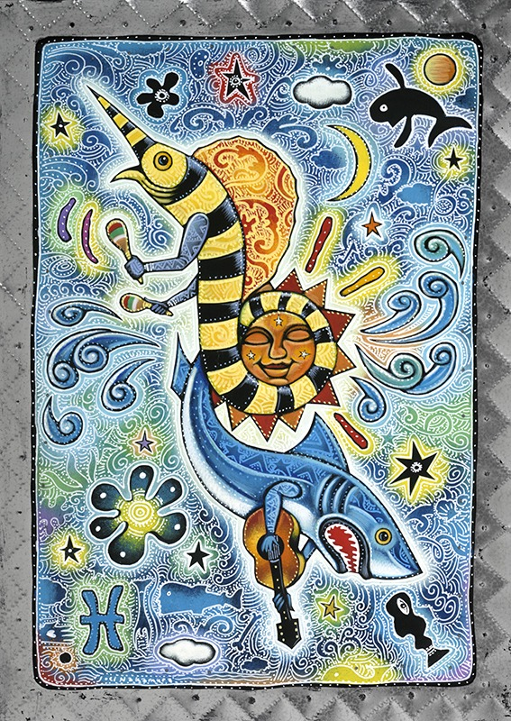
N29 · Artist portfolio context
Astrology cards/ Paper company promotion
Context. Pisces image for astrology series
Visible forms. Two curved fish-like creatures and sun and moon faces occupy a framed field of small marks.
Artist’s source gallery · Original file
artist portfolio title. 567 × 800 pixels.
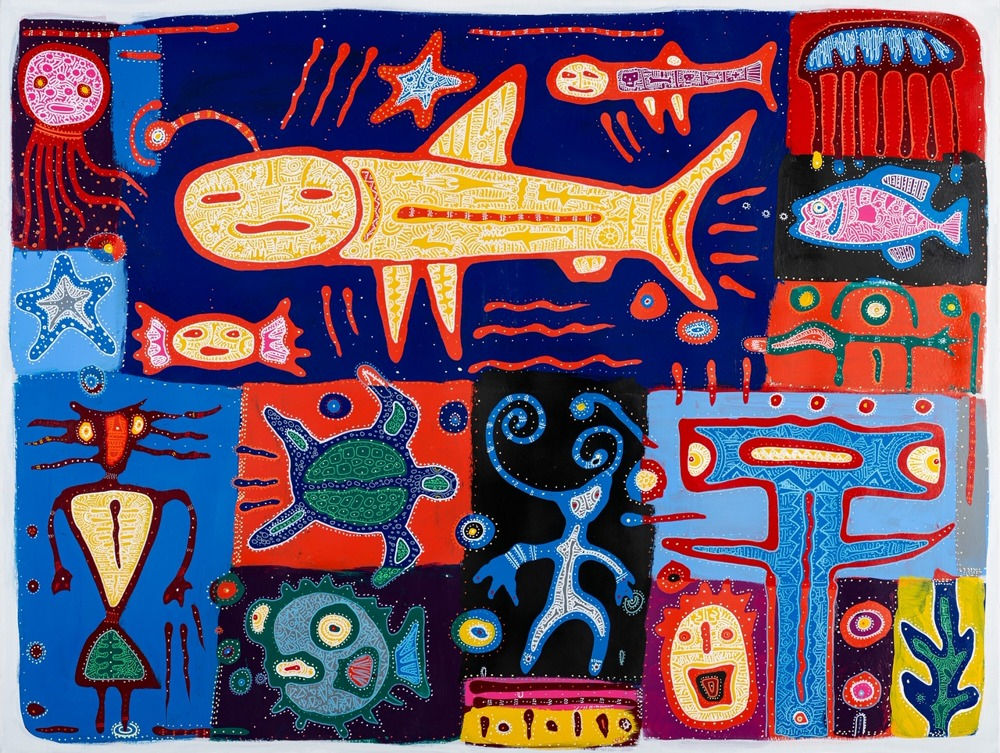
N30 · Artist portfolio context
Makai
Context. 30" x 40" To the Ocean Neoteny series acrylic on canvas
Visible forms. Flat red, blue, and yellow creature shapes fill a horizontal field.
Artist’s source gallery · Original file
artist portfolio title. 1280 × 964 pixels.
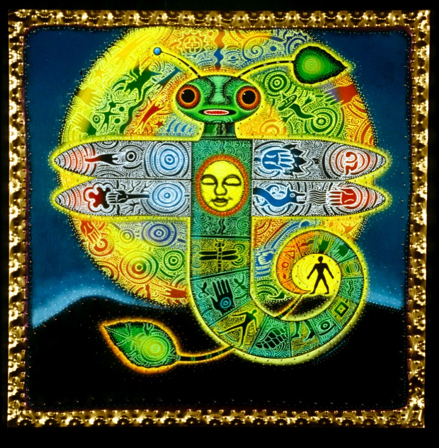
N31 · Artist portfolio context
Portal
Context. Record cover art Josh Clayton
Visible forms. A frontal green figure holds small worlds and signs inside a circular yellow enclosure.
Possible reading. The figure’s compartments encourage a reading of identity as a collection of connected spaces. Its record-cover commission is documented; that interpretation is ours.
Artist’s source gallery · Original file
artist portfolio title. 724 × 738 pixels.
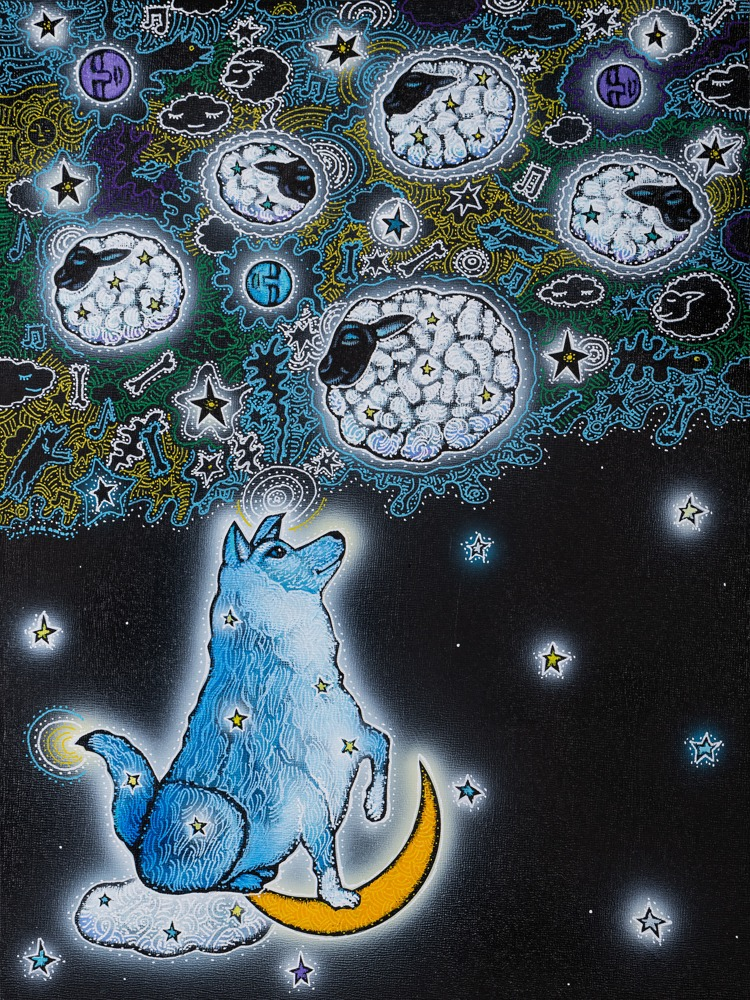
N32 · Artist portfolio context
Sheepdog/Dream Watch
Context. Image about my Sheepdogs I kind of am one myself
Visible forms. A blue dog looks toward floating circular images of sheep in a dark field.
Possible reading. The dog and floating sheep invite a playful reversal of who watches whom while dreaming. The artist identifies the subject as his sheepdogs.
Artist’s source gallery · Original file
artist portfolio title. 1499 × 2000 pixels.
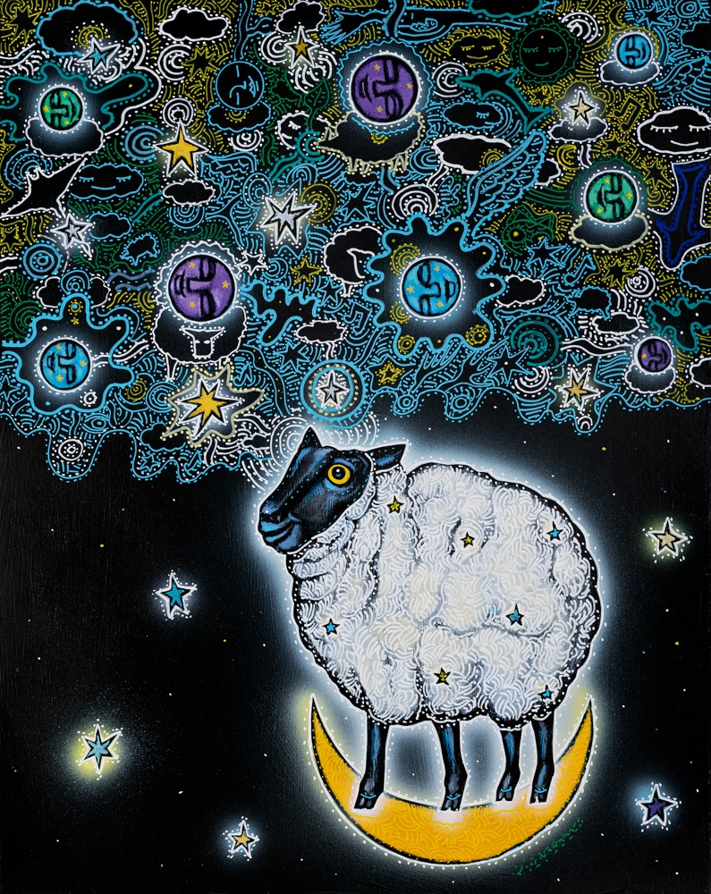
N33 · Artist portfolio context
Dreamwatch
Context. Image about Dreams and Sleep
Visible forms. A sheep stands beneath interlinked outlined forms and floating circles.
Artist’s source gallery · Original file
artist portfolio title. 1591 × 2000 pixels.
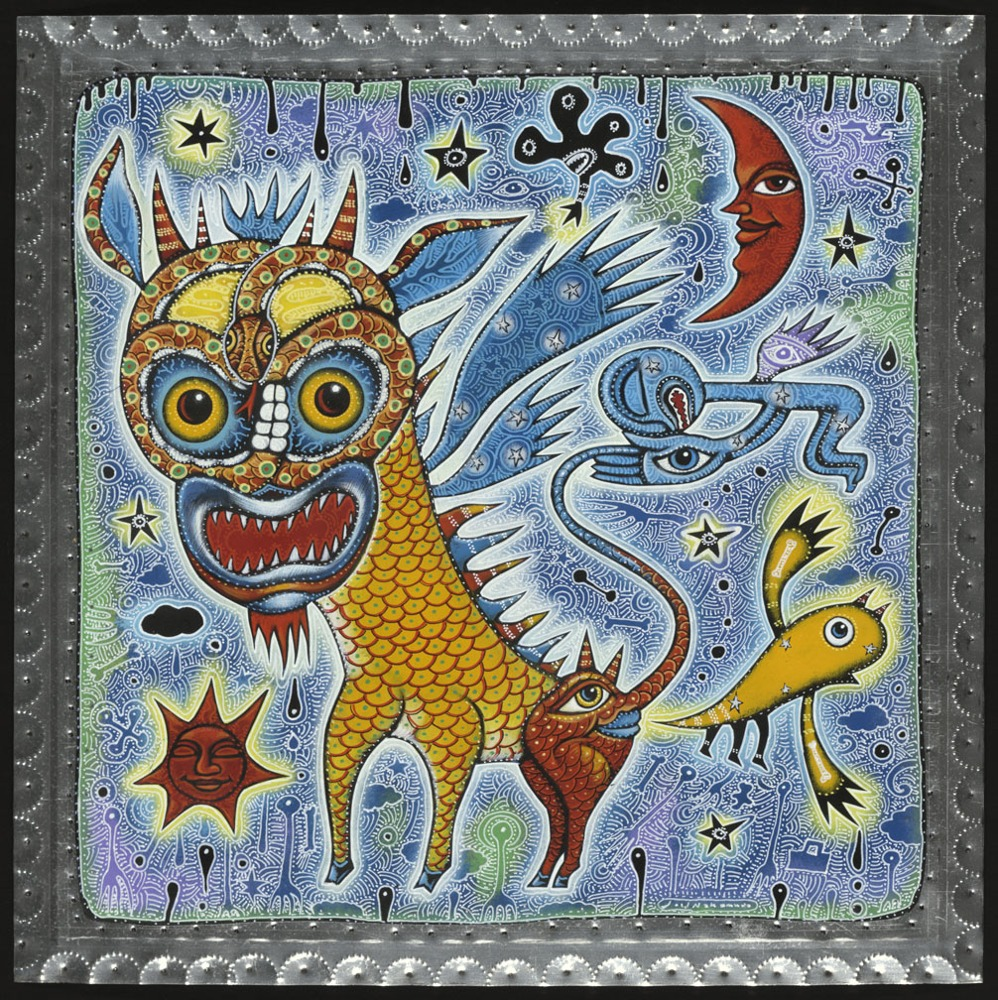
N34 · Artist portfolio context
Manifest Destiny
Context. Image about the Dream World Indiscernible Genus Exhibition
Visible forms. A grinning creature combines animal limbs, patterned wings, a moon, and small surrounding shapes.
Artist’s source gallery · Original file
artist portfolio title. 1006 × 1008 pixels.
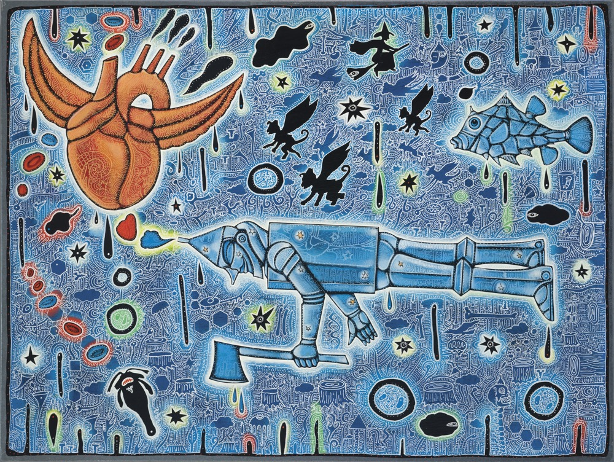
N35 · Artist portfolio context
Tin Mans Dream
Context. Image created for a traveling show for the anniversary of the Wizard of OZ
Visible forms. A reclining figure stretches across a blue field of hands, stars, creatures, and marks.
Artist’s source gallery · Original file
artist portfolio title. 3000 × 2255 pixels.
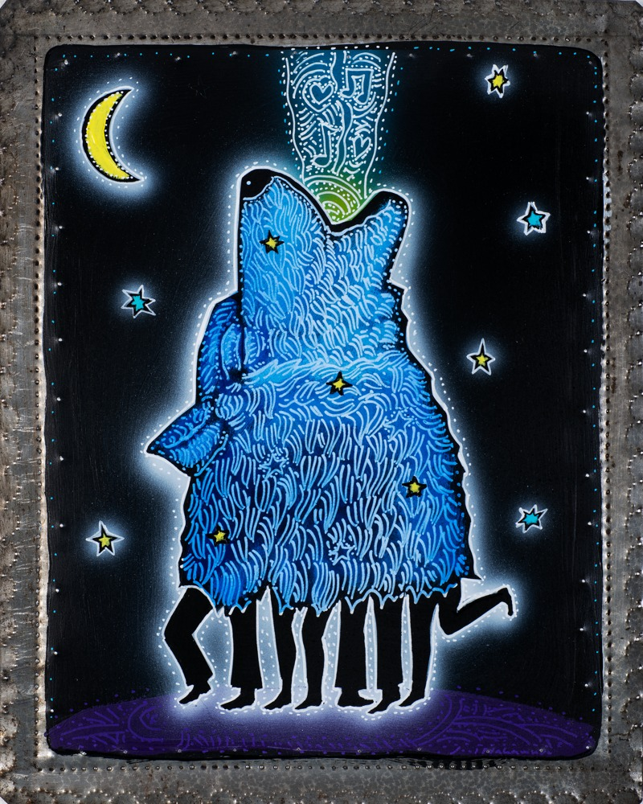
N36 · Artist portfolio context
The Group Howl
Context. Image created during the pandemic
Visible forms. A large howling blue head rises from a group of small black silhouettes.
Artist’s source gallery · Original file
artist portfolio title. 2880 × 3600 pixels.
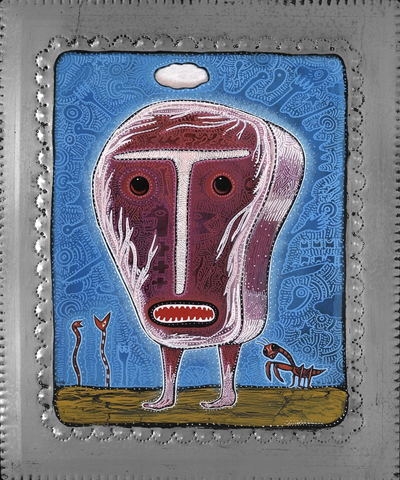
N37 · Artist portfolio context
T Bone
Context. Image from Indescernible Genus exhibition Hahn Ross Gallery Santa Fe NM
Visible forms. A steak-shaped face stands on legs beneath a small white cloud-like form.
Possible reading. The familiar name of a steak and the body-like face suggest a visual joke joining food to a character. The exhibition context does not establish a further editorial argument.
Artist’s source gallery · Original file
artist portfolio title. 668 × 800 pixels.
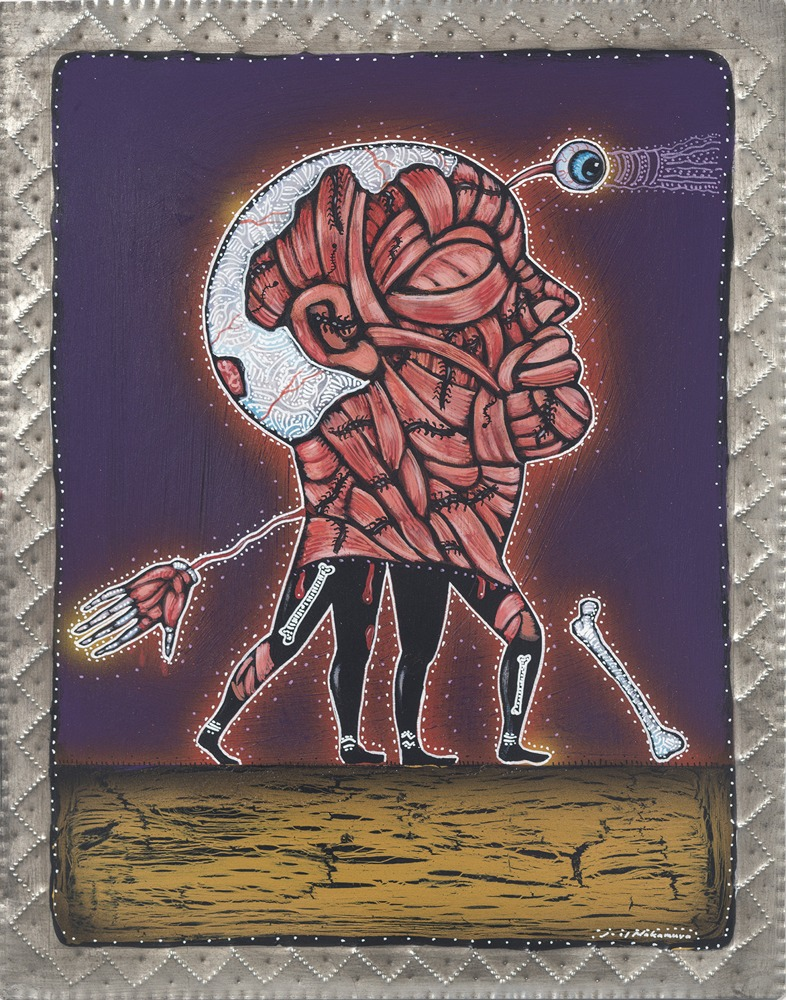
N38 · Artist portfolio context
Zombie Walk
Context. Zombie Walk 11" x 14" acrylic on hand tooled panel
Visible forms. A many-legged figure carries a dense tangled head with an eye on a projecting stalk.
Artist’s source gallery · Original file
artist portfolio title. 1172 × 1491 pixels.
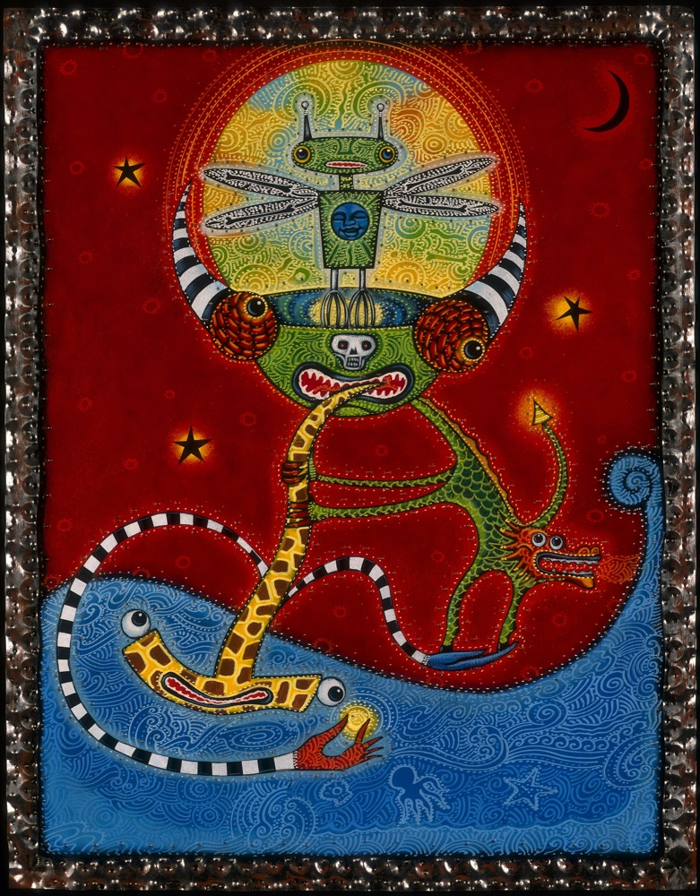
N39 · Artist portfolio context
Ephemeral Soup
Context. Poster image for a AIGA talk
Visible forms. A red serpentine body supports a green face and several projecting limbs inside a dark red panel.
Artist’s source gallery · Original file
artist portfolio title. 3713 × 4752 pixels.

N40 · Artist portfolio context
Noahs Ark
Context. Image about the Arc being a DNA lab
Visible forms. An ark carries many animals; a helix-like structure rises through its center above patterned water.
Possible reading. The artist explicitly describes the ark as a DNA lab. The shared idea of carrying and preserving life connects the traditional vessel with a contemporary scientific structure.
Artist’s source gallery · Original file
artist portfolio title. 2023 × 1366 pixels.
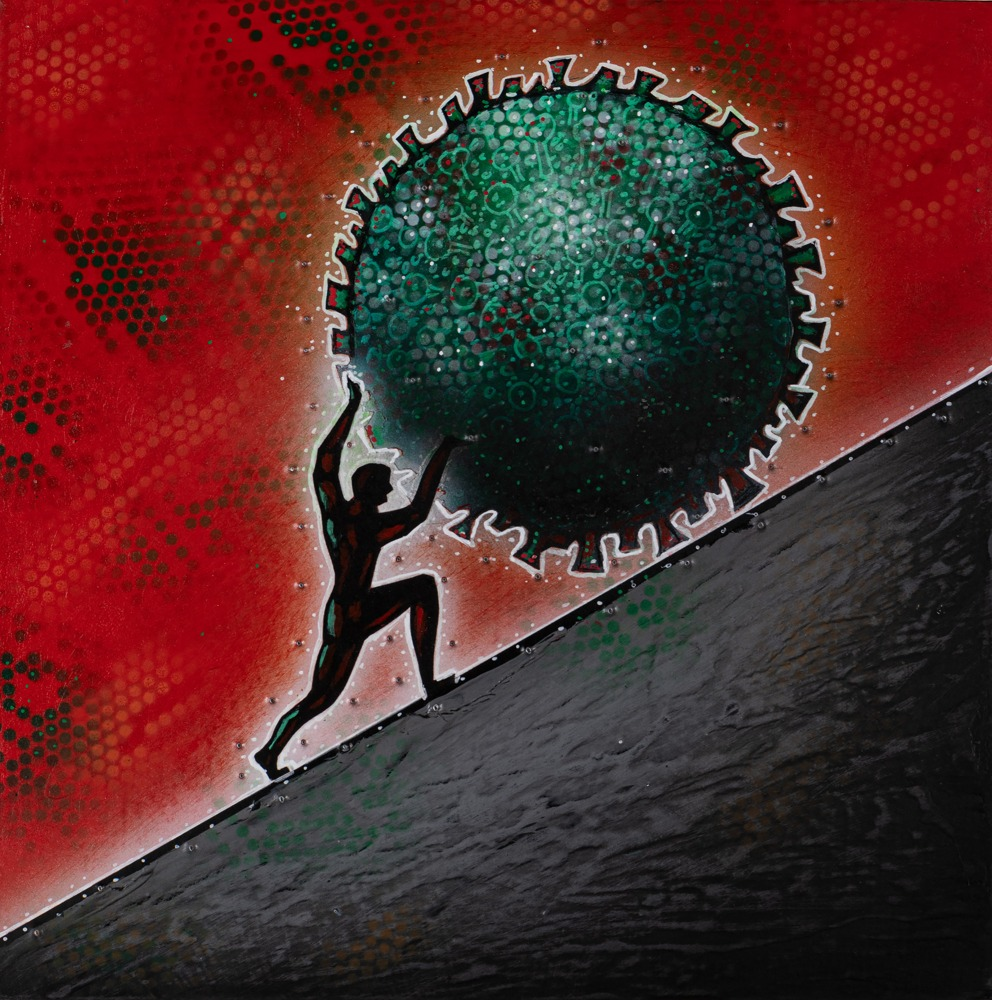
N41 · Artist portfolio context
Sisyphus
Context. Difficult times are mythological
Visible forms. A small silhouette pushes a large gear-edged sphere up a steep diagonal.
Possible reading. The title supplies the Sisyphus reference. The small figure, uphill direction, and disproportionate load make repeated effort immediately legible.
Artist’s source gallery · Original file
artist portfolio title. 1984 × 2000 pixels.
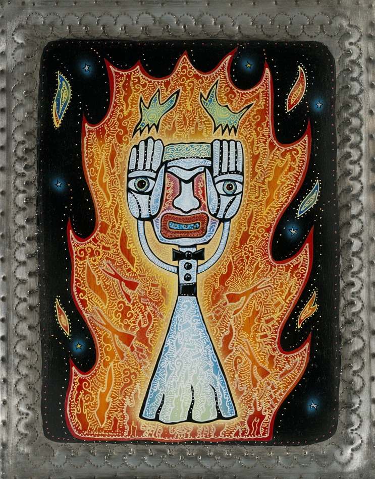
N42 · Artist portfolio context
Zozobra
Context. Pagan burning ritual in Santa Fe NM.
Visible forms. A white frontal figure with raised hands sits within an orange flame.
Artist’s source gallery · Original file
artist portfolio title. 743 × 950 pixels.

N43 · Artist portfolio context
Slow WiFi
Context. Image about Slow WiFi while distance learning
Visible forms. A snail with a spiral shell sits beneath three wireless-signal arcs on a dark ground.
Possible reading. The snail makes slow connectivity bodily and humorous. The artist connects the piece to distance learning, giving the visual metaphor a specific everyday predicament.
Artist’s source gallery · Original file
artist portfolio title. 1997 × 2000 pixels.
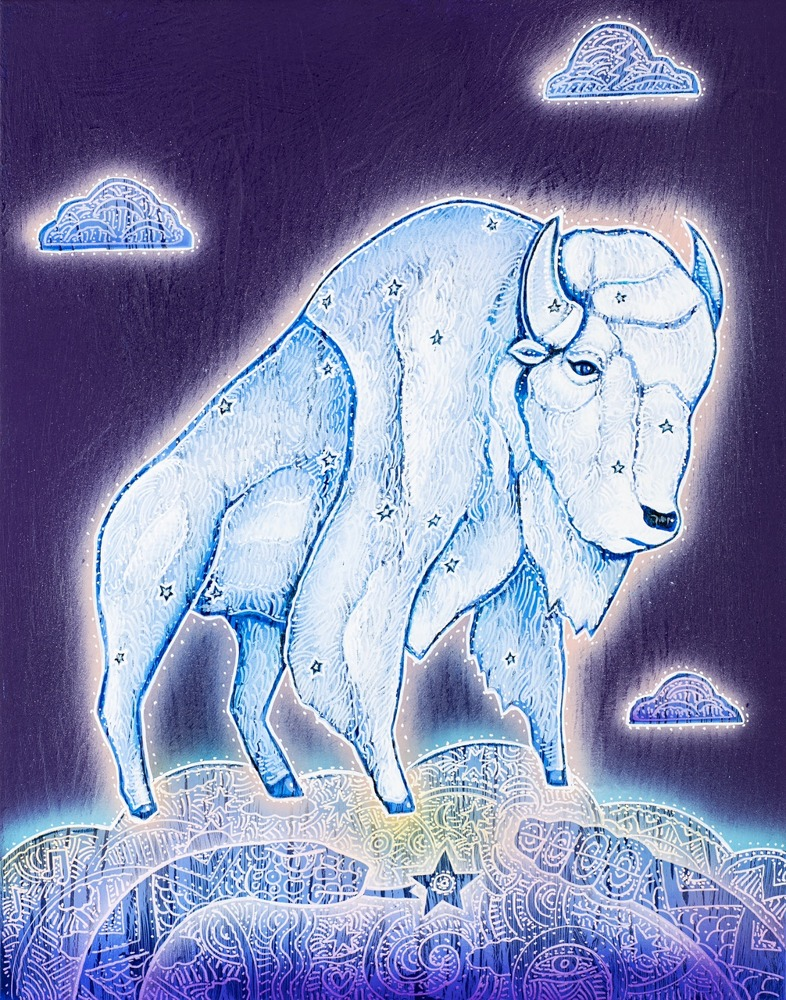
N44 · Artist portfolio context
White Buffalo
Context. White Buffalo Spirit
Visible forms. A luminous white buffalo stands over a patterned oval under small clouds.
Artist’s source gallery · Original file
artist portfolio title. 1006 × 1280 pixels.
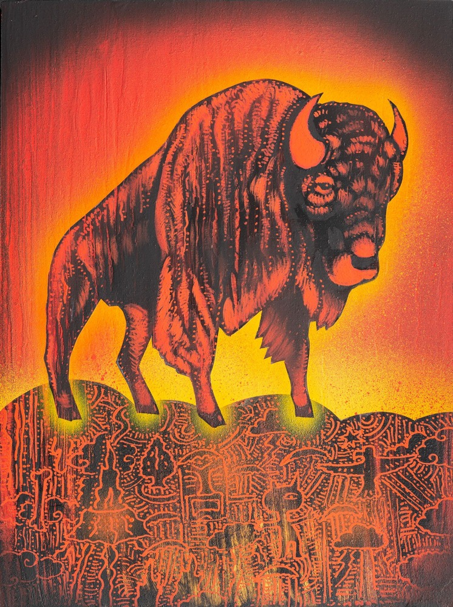
N45 · Artist portfolio context
Red Bison
Context. Igneous Inception exhibition Pop gallery Santa Fe
Visible forms. A red bison stands above dense repeated marks against a glowing red and yellow ground.
Artist’s source gallery · Original file
artist portfolio title. 1492 × 2000 pixels.
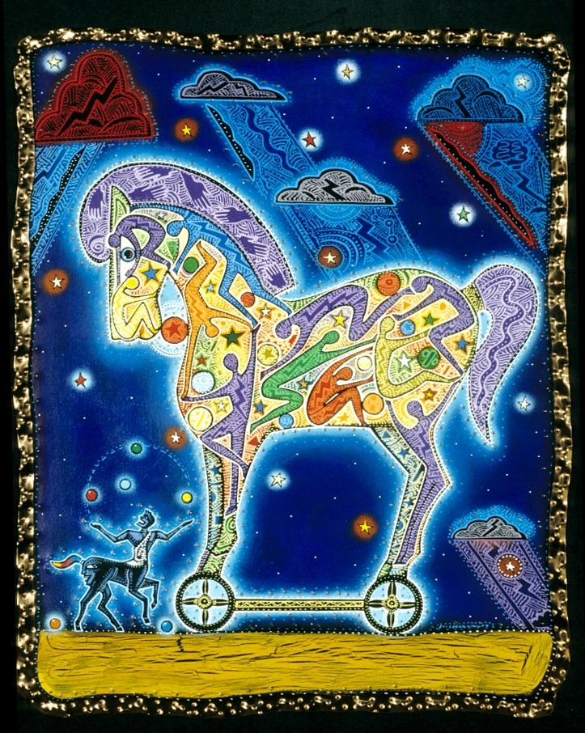
N46 · Artist portfolio context
Trojan Horse
Context. Image for mythology series for Imperial printing
Visible forms. A horse on wheels contains tiny people and patterned compartments.
Possible reading. The inhabitants inside the horse reinforce its title through containment. The wheels make it an object that can move into another space.
Artist’s source gallery · Original file
artist portfolio title. 723 × 906 pixels.
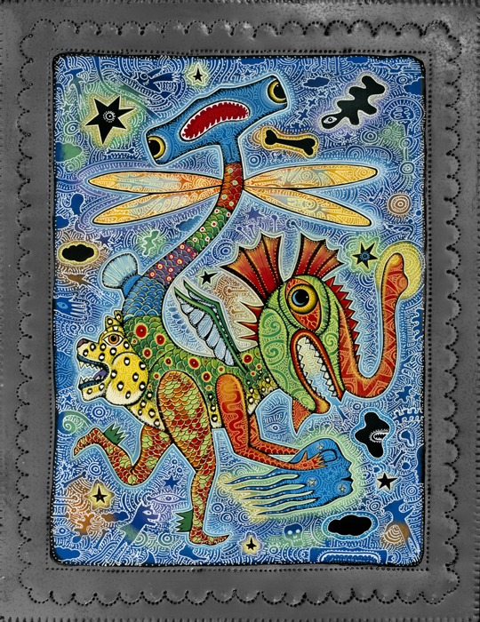
N47 · Artist portfolio context
Indiscernible Genus
Context. Title image for exhibition Hahn Ross Gallery Santa Fe NM
Visible forms. A dragonfly-like creature combines a long curling body, wings, and an elongated animal head.
Artist’s source gallery · Original file
artist portfolio title. 540 × 700 pixels.
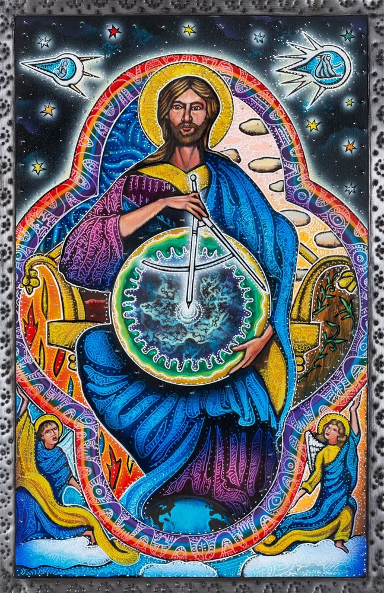
N48 · Artist portfolio context
A traditional version of God as Geometer
Context. comissioned painting
Visible forms. A robed figure, compass-like instrument, rainbow, and round world form a framed composition.
Artist’s source gallery · Original file
artist portfolio title. 828 × 1280 pixels.
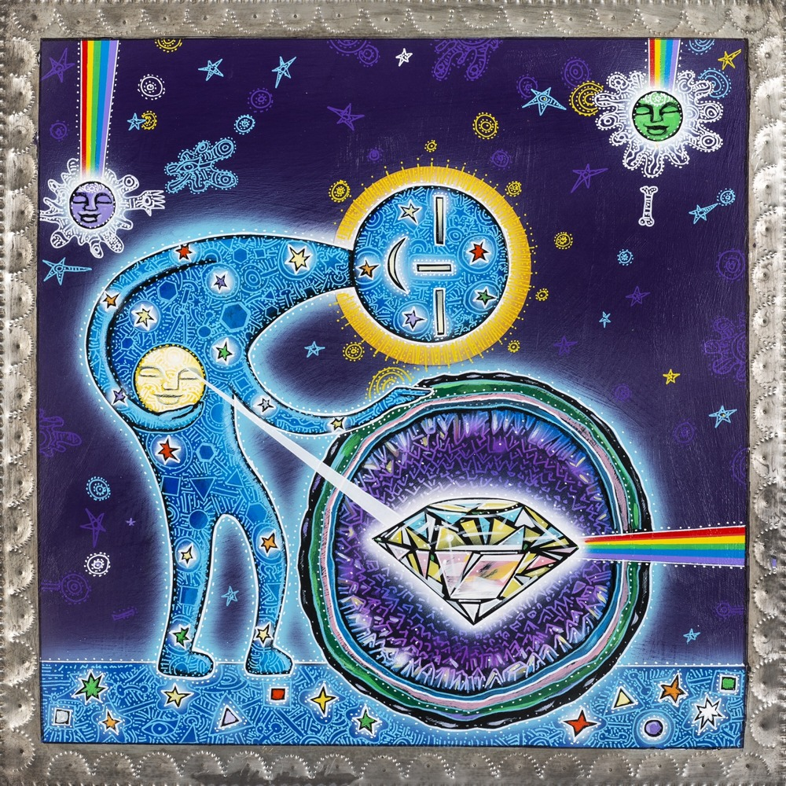
N49 · Artist portfolio context
God as Geometer
Context. Image for a festival poster
Visible forms. A blue figure holds a compass-like instrument near a large circular eye or lens and a bright geometric form.
Artist’s source gallery · Original file
artist portfolio title. 1280 × 1280 pixels.
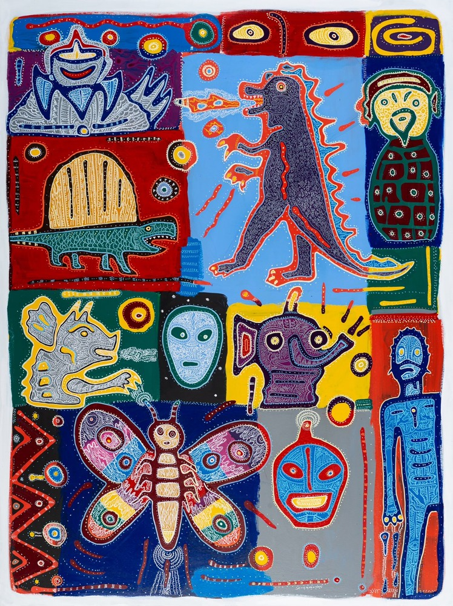
N50 · Artist portfolio context
Kaiju Glyphs
Context. 30" x 40" Acrylic and enamel on canvas
Visible forms. Creatures and mask-like shapes fill a red, yellow, and blue field of small compartments.
Artist’s source gallery · Original file
artist portfolio title. 958 × 1280 pixels.
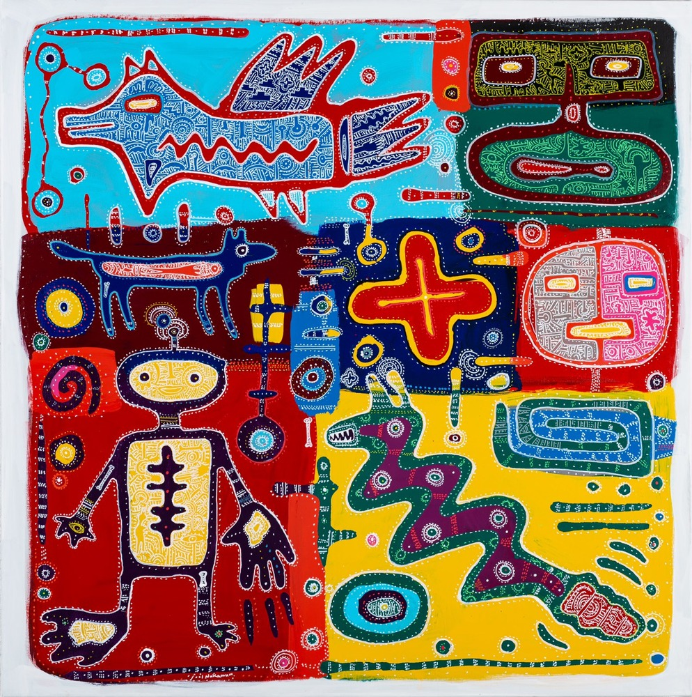
N51 · Artist portfolio context
Talking Rocks 2
Context. Painting on canvas inspired by petroglyphs avaiable in shop
Visible forms. A patchwork of colored zones holds small animals, faces, crosses, and glyph-like marks.
Artist’s source gallery · Original file
artist portfolio title. 1272 × 1280 pixels.
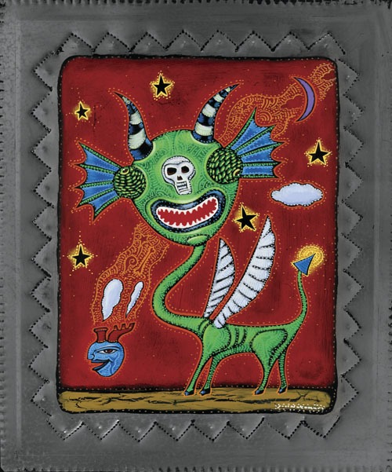
N52 · Artist portfolio context
Green Folk Legend
Context. Indescernible Genus exhibition
Visible forms. A smiling green creature and a red figure share a tall framed panel with stars and a skull.
Artist’s source gallery · Original file
artist portfolio title. 500 × 601 pixels.

N53 · Artist portfolio context
Insomnia
Context. image for Emory Health
Visible forms. Sleeping and wakeful faces join above a small red body, with a crescent moon and stars nearby.
Possible reading. Contrasting wakeful and sleeping faces share a character. This makes conflicting states visible together, consistent with the title and health commission.
Artist’s source gallery · Original file
artist portfolio title. 1832 × 2252 pixels.
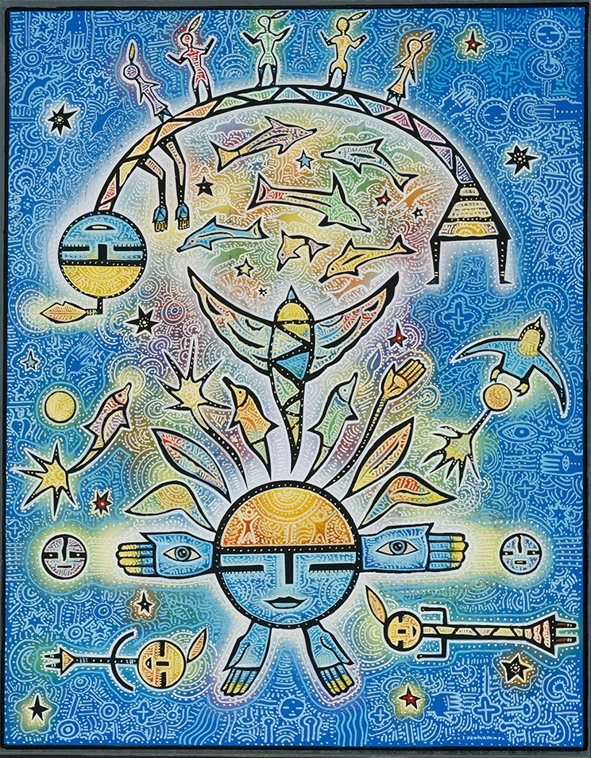
N54 · Artist portfolio context
Rainbow Bridge
Context. Dream Catcher Exhibition
Visible forms. A tree and small beings grow above a blue face, enclosed by an arch with figures and a radiating circle.
Possible reading. The arch, branching tree, and small beings connect a central figure to a larger inhabited environment. The portfolio identifies an exhibition context, not the meaning of each symbol.
Artist’s source gallery · Original file
artist portfolio title. 744 × 954 pixels.